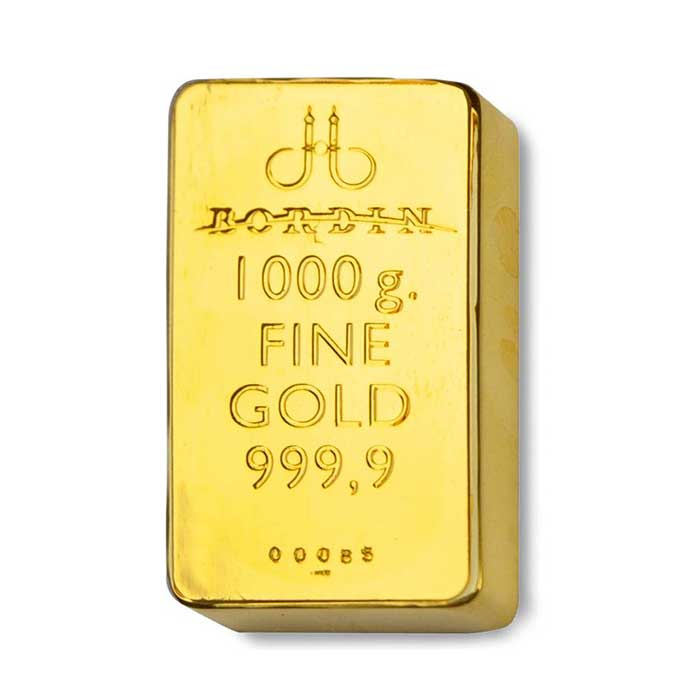

Oro (Au)
- Nome elemento:
- L'Oro (Au) è un elemento chimico appartenente al gruppo 11 della tavola periodica. È noto per il suo valore monetario ed è molto ricercato.
- Massa atomica:
- 196,96657 u
La massa atomica dell'oro è 196,96657 unità di massa atomica.
- Numero atomico:
- 79
Il suo numero atomico è 79.
- Gruppo:
- 11
L'oro appartiene al gruppo 11 della tavola periodica.
- Periodo:
- 6
L'oro si trova nel periodo 6 della tavola periodica.
- Temperatura di fusione:
- 1064 °C
Il suo punto di fusione è di 1064 °C.
- Temperatura di ebollizione:
- 2836 °C
Il suo punto di ebollizione è di 2836 °C.
- Densità:
- 19,32 g/cm³
La densità dell'oro a temperatura ambiente è di 19,32 g/cm³.
- Elettronegatività:
- 2,54 (scala di Pauling)
La sua elettronegatività è 2,54 sulla scala Pauling.
- Anno di scoperta:
- Preistoria
L'oro è stato uno dei primi metalli scoperti dall'uomo, risalente all'epoca preistorica.
- Abbondanza:
- Presente in tutta la crosta terrestre, sebbene in basse concentrazioni. Si trova in depositi primari e secondari.
- Caratteristiche:
-
- È un metallo prezioso noto per il suo valore monetario.
- Si forma nelle profondità dello spazio attraverso eventi catastrofici come collisioni tra stelle di neutroni.
- È stato probabilmente il primo metallo utilizzato dall'uomo, intorno al 6000 a.C.
- Applicazioni tecnologiche:
-
- Utilizzato nella produzione di componenti elettronici (chip, circuiti stampati, connettori).
- Impiegato in campo medico (apparecchi dentali, protesi ortopediche).
- Nanoparticelle d’oro utilizzate per indirizzare farmaci (es. trattamenti contro il cancro).
- Localizzazione giacimenti:
-
- Si trova nella Crosta Terrestre.
- I paesi con le maggiori riserve sono il Sudafrica, l'Australia e la Russia.
- Effetti sulla salute:
- Generalmente sicuro per l’uomo e non provoca reazioni negative. Ricerche mostrano potenziali effetti terapeutici.
- Effetti sull'ambiente:
- L'estrazione è dannosa, causa deforestazione, perdita di biodiversità, inquinamento da polveri sottili ed emissioni di gas serra.
